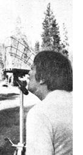

San Francisco Bay designers Don and Sheri Lewis really thought they had it made. After "dreaming the dream" for years, they had just purchased a California mountain lot and Don was all ready to lay out and start the construction of a solar-heated home.
And then Sheri, pointing to the lot south of theirs, asked a very important question: "Hey. How do we know those tall pine trees over there won't shade our house during the winter?"
"Don't worry," Don answered. "I'll check everything out and, if there's any doubt about the solar fall on this property, we'll just build somewhere else."
As Don soon learned, however, "checking everything out" was far easier (and less expensively) said than done. The only instrument on the market that could predict the amount of solar radiation which would strike the Lewis (or any other) lot cost $400 and was about as complicated to operate as an old-time corn binder. (Besides, what would Don do with the $400 monstrosity after he'd used it once?) The engineers and other solar "professionals" that Don talked to wanted even more than $400 to survey the Lewis property.
"We did want to quality for the California solar tax credit," Don now remembers, "which meant we had to demonstrate that our house site would receive at least four hours of direct sunlight at the winter solstice. Beyond that, however, I wanted the sun-warmed residence to be both effective and cost-efficient. And I figured that double-barreled stipulation dictated a need for at least five or six hours of unobstructed sunshine on our solar collectors and south windows during December 21, the shortest day of the year.
"But that still wasn't what I really needed to predict. What I actually wanted to forecast was when the house would receive its sunlight each day. Three times more solar radiation falls on an average square foot of the earth's surface, you know, between 10 a.m. and 2 p.m. local time . . . than strikes that same square foot during any other combination of four hours."
Don, then, was faced with three possibilities: [1] Buy the $400 "corn binder" instrument, use it once, and store it . . . [2] shell out $400 or more for a one-time survey . . . or [3] buckle down and invent a simple, inexpensive, easy-to-use, highly portable, and super accurate Solar Site Selector.
Don quickly chose Option Three and is his baby ever a honey! It consists of [A] a semi-circular baseplate (that you can hold on your lap, balance on a rock or fencepost, or mount on any standard camera tripod) with a built-in compass and leveling bubble, [B] an attached, curved, transparent screen imprinted with solar day/hour sun paths for the local latitude during the critical fall/winter/spring portion of the year, and [C] an attached 180° optical viewer that is precisely positioned to make the first two parts "do their stuff".
The operation of the Lewis Solar Site Selector is simplicity itself. Just set the, baseplate up on the site you want to survey, use the compass to point it due south, check the bubble to make sure the whole shebang is level, and then take a squint through the optical viewer.
Presto! As you look through the viewer at the transparent screen superimposed on the trees, buildings, and other obstructions in the background . . . you can see exactly where the sun will be during any hour from 8 a.m. to 4 p.m. from the autumn equinox (September 22) through the spring equinox (March 21). Does the screen tell you that the spot you've picked will be free of shade between 10 a.m. and 4 p.m. on December 21? If it does, you've just chosen yourself a worthwhile site for a solar collector, suntempered house, etc. If it doesn't, now's the time to find out . . . before the heavy investment in time, money, and materials has been made.
Unfortunately for Don and Sheri-at least in the short run-their little Site Selector (which cannot tell a lie) quickly turned thumbs down on the solar possibilities of the lot they'd just purchased. But fortunately for us all (even Don and Sheri)-in the long run-the Lewis couple rapidly realized what a tremendously useful tool their Selector can be to the solar experimenters, architects, contractors, and other members of the Sunshine Generation. And so they've gone into the mini-business of manufacturing and distributing their slick little device.
|
|
|
 |